沿濟州文化街一直往下走, 經過濟州島五賢詩句、三姓神話壁畫, 順道遊覽了濟州城址, 不經不覺來到五賢壇, 剛好把整條濟州文化街從南至北走了一遍。出發前完全不知道有這條濟州文化街的, 更不知道有濟州城址這古蹟, 如果不是為了往 NH 銀行兌換韓元, 就白白錯失了這段精彩充實的行程。

東門自由市場 NH 銀行兌換韓元
離開濟州城址及五賢壇, 再向前走一會便看到 NH 銀行。進入銀行, 今天美元兌韓元的匯率是1098.xx, 和八天前在中文區時的匯率只差了少許。粗略計算餘下行程所需旅費, 其實最主要是還有十晚酒店房租和超昂貴的長途巴士費用, 最後決定用七百五十美元兌換了約八十二萬韓元。
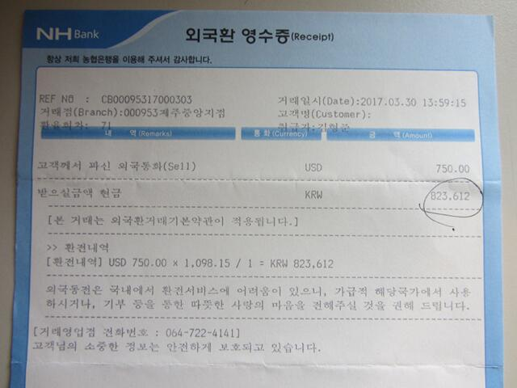
歸納這旅程至今的兌換韓元記錄:
中文區: 800美元
濟州市: 750美元這次旅程的總消費十分簡單, 我們只帶了約五萬韓元來韓國, 只要回程時點算餘下多少韓元便知道了。
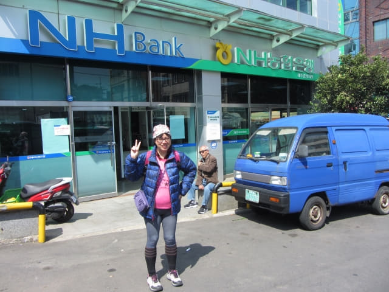
步行往濟州港旅客碼頭預購明天往木浦船票
兌換了餘下行程所需韓元, 接著是步行往濟州港旅客碼頭, 打算預購明天往木浦船票。乘渡輪往木浦是這旅程最重要的一個行程, 千萬不可以有任何錯失。昨天下午已去過濟州港旅客碼頭, 只可惜到達時已經過了營業時間, 所以今天提早前往。
沿東門自由市場走, 已經看到前面不遠處的濟州市七星路購物街的入口。濟州市的面積不大, 走了幾次已經對四周街道十分熟悉, 不用地圖也可以四處閒逛。
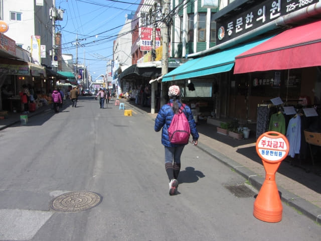
多麼漂亮的地瓜! 反觀香港的地瓜,街市商人會用厚厚骯臟的黃泥黏著, 以增加販賣重量!
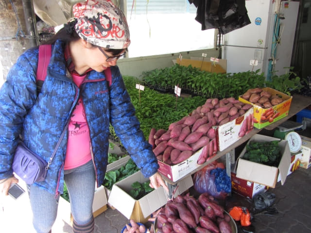
經過濟州鄉校舊址。
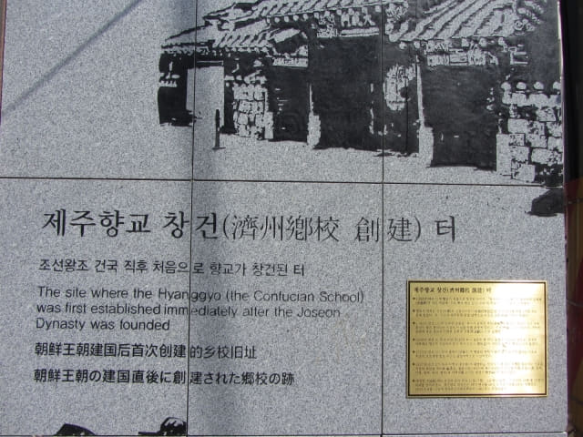
穿過東門自由市場, 來到濟州市一條主要道路 – 東門路 (동문로)。馬路對面便是濟州市七星路購物街的其中一個入口。
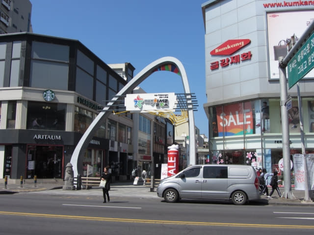
接著走下濟州市中央地下商店街, 從 1 號 出入口走上街道。
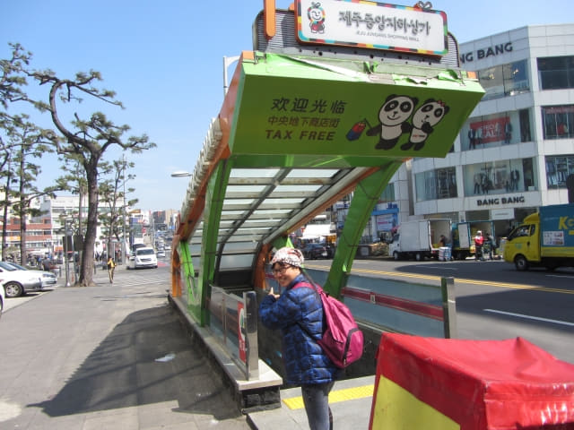
濟州市中央地下商店1 號 出入口處便是山地川廣場 (산지천마당)。今天的天氣很好, 但有誰料到, 稍後黃昏前便轉為密雲, 明天還狂風暴雨!
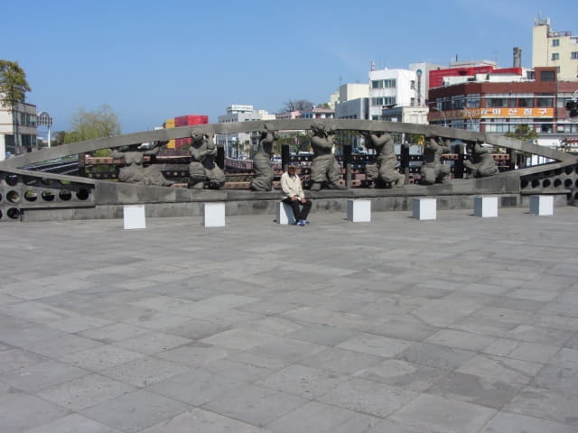
穿過廣場, 沿環境優美的山地川畔走。
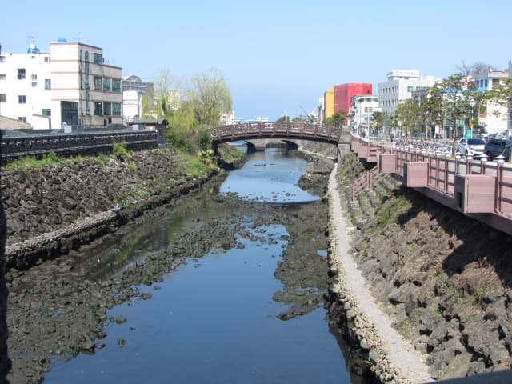
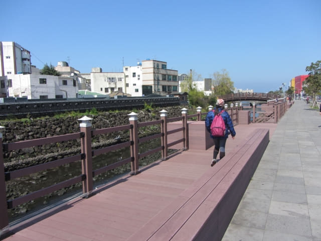
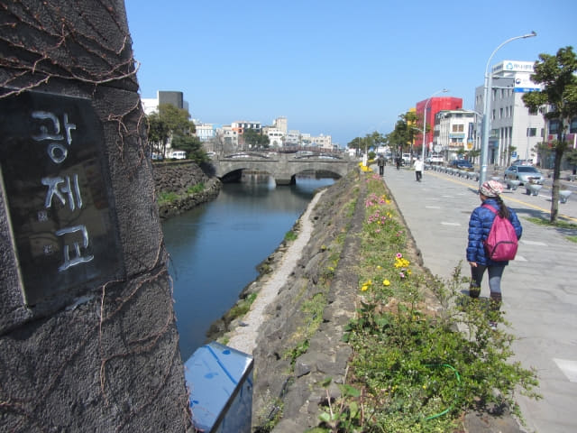
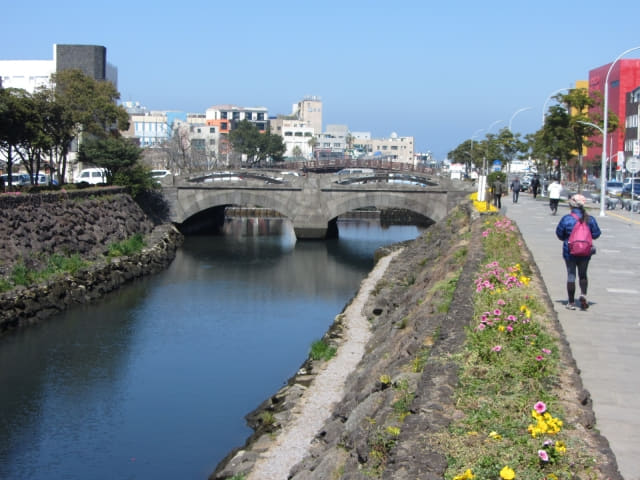
山地川中有一隻鷺, 我們每次經過這裡都看到牠, 都是呆若木雞的在岸邊站著, 還以為牠是呆呆滯滯的。怎料…. 突然間, 只見牠360度轉身飛躍, 直撲河中, 一口將一條大魚啄在口中, 然後飛往堤上, 整個過程只是短短的一瞬間, 水面竟然沒有激起半點掙扎的浪花, 清脆利落! 這時才知道牠是目光炯炯、耳聽八方的等待機會, 並不是呆若木雞的站著。
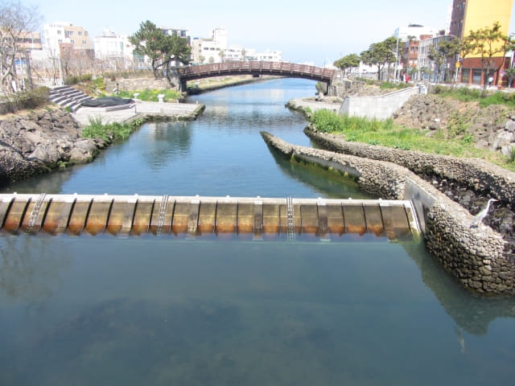
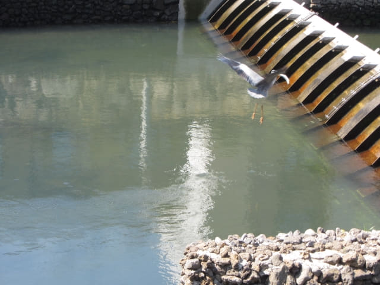
接著將魚轉動到適當的方向, 暴力的吞下, 看見牠呆了一會, 眼睛反了幾下, 總算沒有窒息身亡。
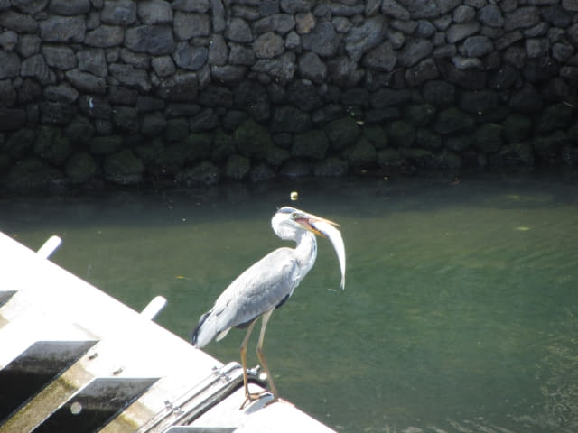
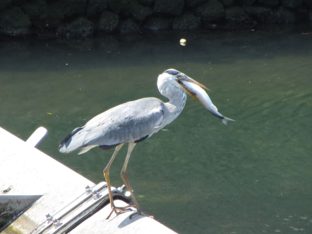
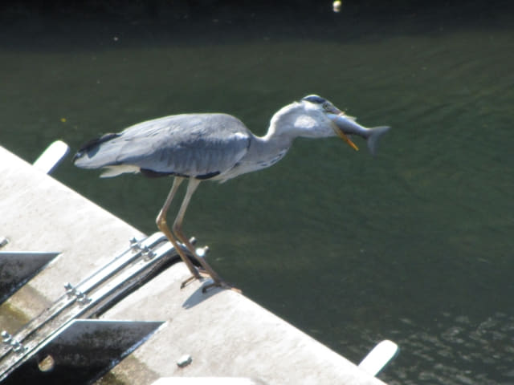
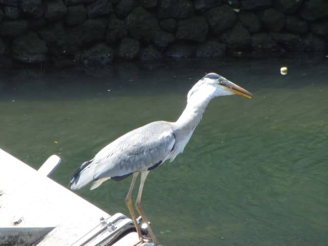
今天時間充裕, 往河畔流連了一會。
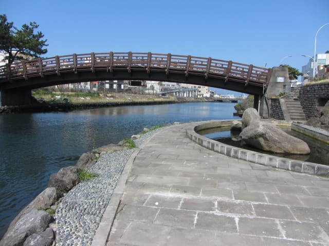
在山地川濟州港出口處轉左走, 又經過那個好像是民族村的地方, 今天尚未關門, 便進內參觀, 最重要還是去了洗手間鬆鬆。Ah~~~ 舒服曬!
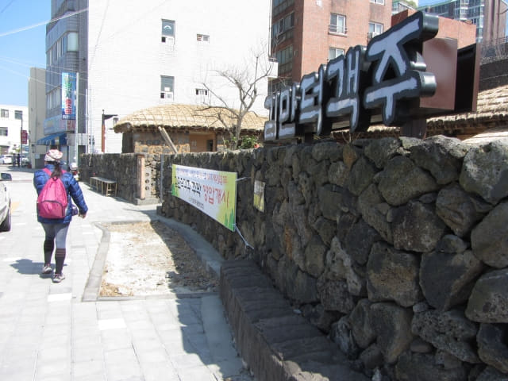
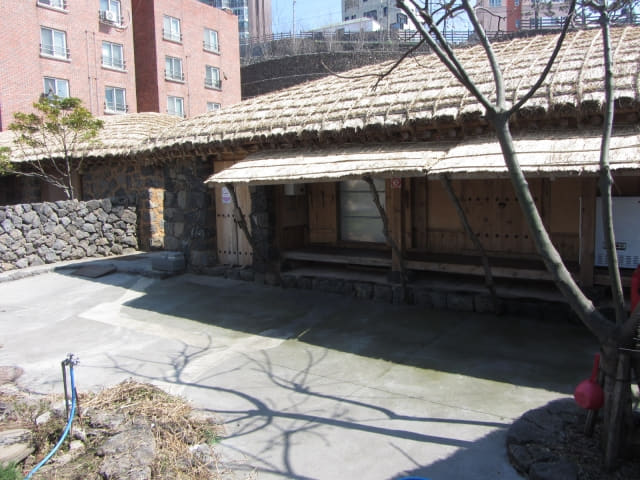
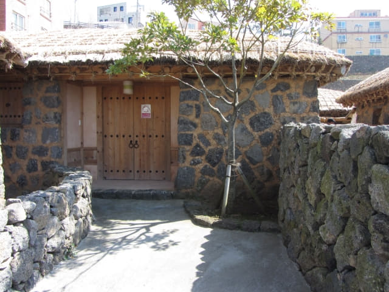
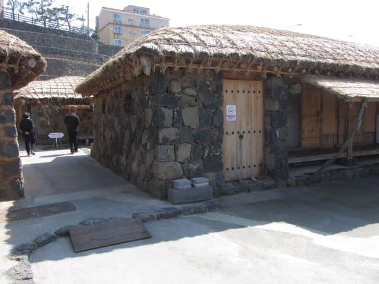
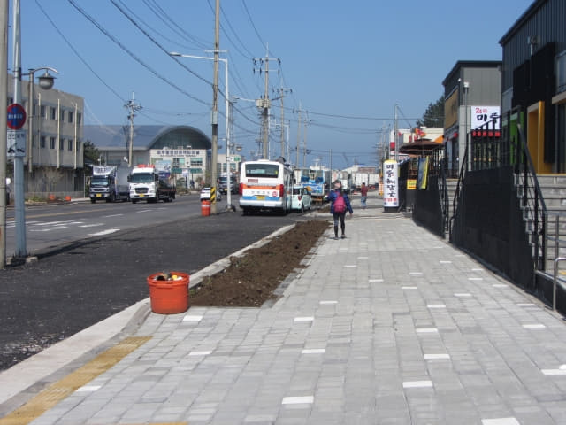
濟州港旅客碼頭 (제주항 연안여객터미널 Jeju Coastal Ferry Terminal)
走了一會, 濟州港旅客碼頭就在前面不遠處的馬路對面。

{kind=link}